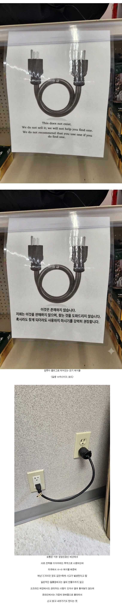

맙소사 저걸 저렇게 점프 할 생각을 한다고?
와.. 왜 안팔지? 생각했다가 수-수였네 ㄷㄷㄷ;;
콘센트 표정 야한데 어흐
이세계 귀환주문서 ㄷㄷ
아예 단락상태로 붕 떠있는 곳에 전원 연결하려고 그러는 건가..?
그런가봄 집 설계를 ㅈ같이 한듯 ㅋㅋ
수-수 수수 수퍼노바
수수 수필러브
저런게 판매품으로 존재한다고?
아니 뭐 필요하면 만드는거야 어렵지않으니 만들면 되는데
와 굳이... 안되면 노출콘센트박스 달아서 조인트하고 배선하면 될거같은데
이거 좀 PC하군요
집도 나무로 만드는 놈들이 걍 벽좀 뜯어서 이어 놓지 뭔 짓이여
기술자 부르면 존나 비싸고, 저 케이블하나면 끗. 굳이 잘모르는 내가 했다가 수습 안되면 더 ㅈㄹ 남.
Diy가 너무 흔해서 생기는 찐빤가
해병 코드ㄷㄷ
긴거 하나를 양쪽에 넣다니 어흐
선상마약쎾쓰찌찌파티유대똥게이상류층넘덜 이젠 사회기반시설마저 꼬빔파티로 만들고 있느냔 말이다앗
인생을살아주세요오오오
미국집 가보면 가끔 콘센트가 벽 버튼이랑 연결되어 있음. 거실을 간접 스탠드 등 쓰다보니 그 스탠드 꽂으라는 곳인데 신기함...
BL이 이렇게 위험합니다
같은 극성에 꽂으면 전류 안 흐르지 않나?
홀리쓌.....
저런건 배선을 직접 하다가 찐빠내서 저렇게 땜빵해서 쓰는경운가?
점퍼선ㅋㅋㅋㅋㅋ
미국 집이면 석고보드 잘라서 아울렛 사이 배선-> 땜질 이면 존나 금방인데 왜 저따구로 하지? 존나 보기도 안좋은데 ㅋㅋㅋㅋㅋㅋㅋ
미국의 공교육은 애저녁에 실패했어
저러면 저항없어서 ㅈ되는거 아니냐? 진짜 화재나겠네.
아주 잠깐이면 몰라도 무조건 불날 것 같은디???
게이섹스의 위험성
아니시발 저딴게 세상에 왜 존재함
전기과를 나왔는데도 모르겠다 헤헤
혹시라도 이런 제품과 마주친다면 당장 신고하고 도망치십시오
아니 시발 미쳤냐고 ㅋㅋㅋㅋ
세번째 짤 이해못한 개붕이들 좀 있네 ㅋㅋㅋ
저게 진짜로 필요한 사람이면 직접 만들수 있어서
절대 공산품으로 나오면 안되는 물건임 ㅋㅋㅋ
전기쪽 문외한인대 저건 꽂으면 퍽! 소리날거같은데
무한동력은 실존한다구.
ㄱ-
저거 문제있나?
저 콘센트는 접지선때매 3구멍이라서
활선 중성선이 좌우로 구분되있으니까 꽂아봐야
활선-활선
중성선-중성선 이어주고 끝 아님?
활선이랑 중선선 꼬여서 설치되는곳이 있어서 그런가?
저런 배선이 있디고? 한쪽 콘센트는 분리된 배선이고 전력도 안들어와있는거??